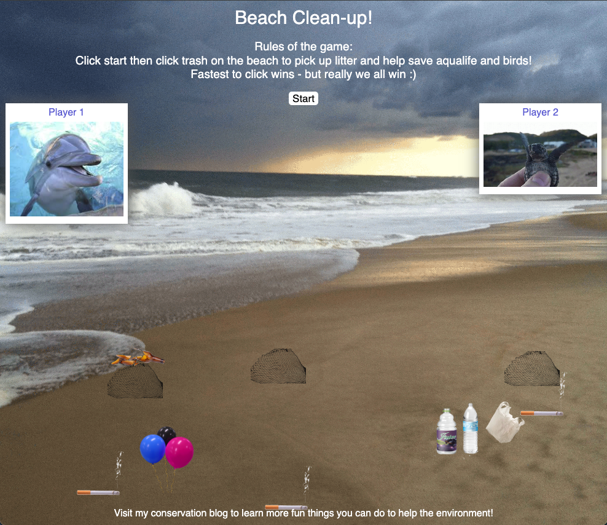
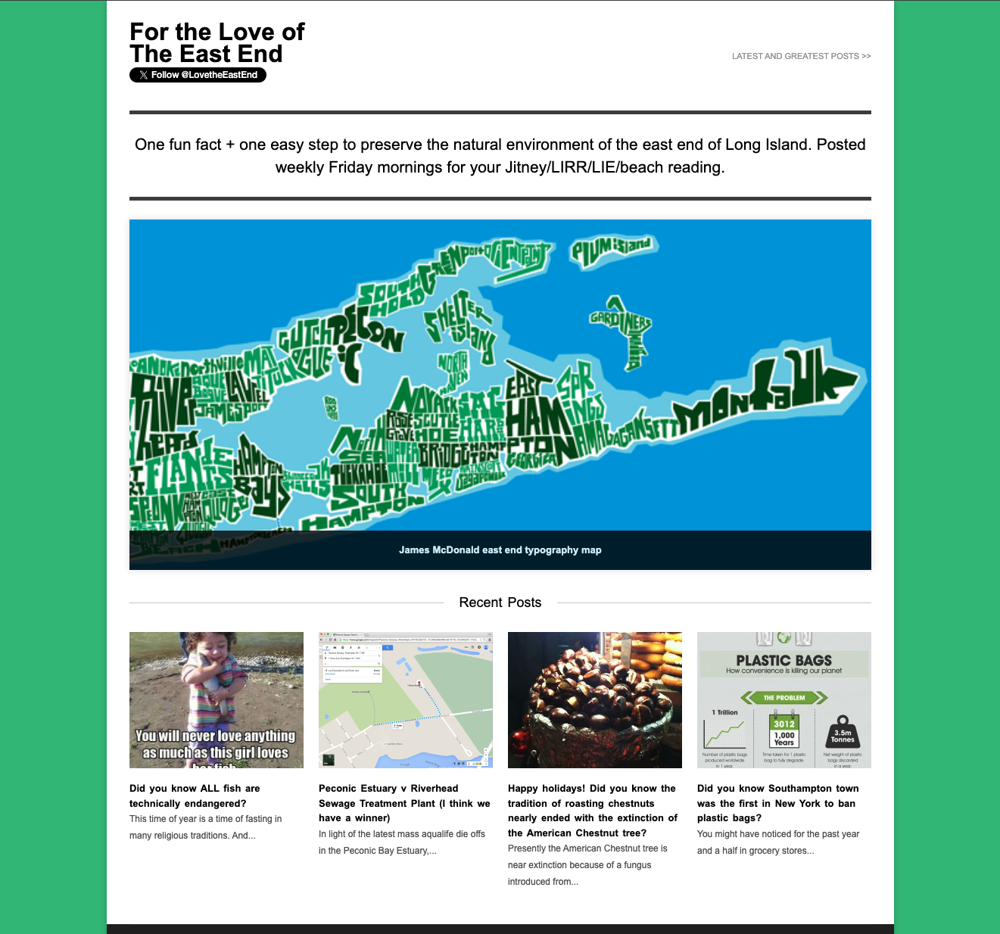

Beatrice Kirkbright
Hi. I'm a senior product technologist with 14 years in design, development and product management. It all began with code for me so I have held roles on both the development and design side. Most recently, I launched and lead a design system team and that is my primary interest - design systems, design at scale and leadership in any area that needs support between design and development. My technical background has enabled me and my teams to deliver without the normal bumps around hand off of design, scaling teams and products, execution gaps or bugs.
I have tended to work on
large enterprise finance
enterprise finance and
insurance products
which have necessitated a large scale view to efficiency. Those experieces informed why I am passionate about design at scale and roles where there is a need to streamline or support conversation between development and design. As a leader I prioritize empathy (of course as a UX-er) and example. So yes, I love to get into the flow of
coding
and
design
and
insurance products
which have necessitated a large scale view to efficiency. Those experieces informed why I am passionate about design at scale and roles where there is a need to streamline or support conversation between development and design. As a leader I prioritize empathy (of course as a UX-er) and example. So yes, I love to get into the flow of
coding
and
design .
.
When I'm not creating, I can be found on the tennis or squash courts, birdwatching, diving, and trying to save the planet from climate change. If you have read to this point and anything here has resonated, please reach out or continue reading on